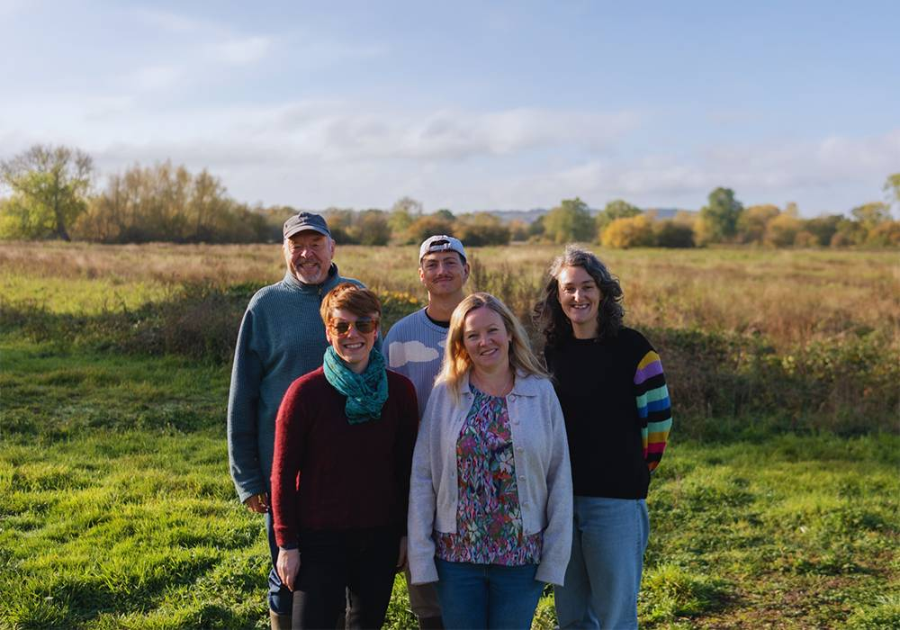
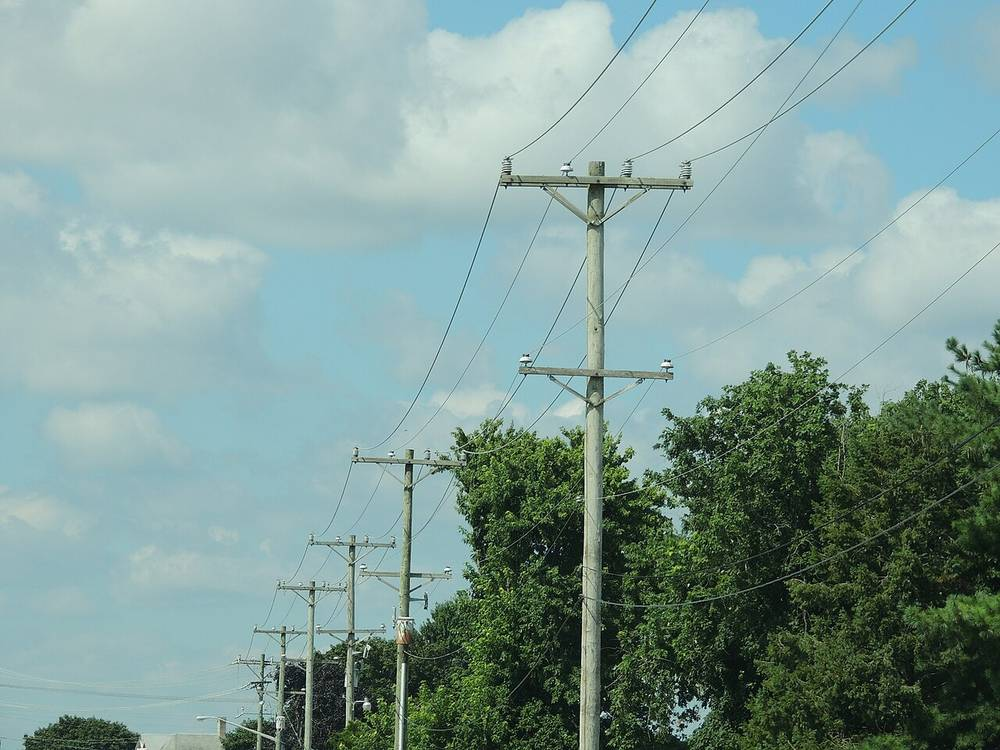

금융
영국 공동체에너지 투자 19% 줄어…359MW 멈춰
잉글랜드·스코틀랜드·웨일스 공동체에너지 단체가 낸 2026년 현황 보고서다. 660개 단체 조합원 8만9,023명이 발전 설비 452MW를 운영한다.

독일 협동조합 시민 배터리, 184kWh 출자 다 채웠다
다름슈타트 에너지협동조합이 비켄바흐 산업단지의 남는 접속 용량에 붙인 배터리 자금을 11월 20일 시민 출자로 마련했다. 지분 1좌는 100유로다.

셰틀랜드 변전소 주민기금 53만 파운드, 주민이 정한다
영국 송전회사가 모시힐 풍력 연결 변전소 주변 마을 기금을 2027년 여름 연다. 12월부터 주민 의견을 들어 지원 지역과 쓰는 곳을 정한다.

옥스퍼드셔 주민 태양광·배터리, 50만 파운드 출자 모집
로우 카본 허브가 7.4MW 태양광과 10MWh 배터리 건설비를 2027년 2월 5일까지 모은다. 20일 현재 89명이 12만1,545파운드를 냈다.

미래대응기금 지방 몫, 교부세 산식 배분 두고 쟁점
경기도는 불교부단체라 빠질 수 있다며 성장기여도 반영과 8,750억 원 추산을 내놨다. 행정안전부는 일부를 일반재원으로 교부한다고 설명해 왔다.

시민안전보험 15세 미만 사망보장, 상법 개정 국회 논의
국무총리비서실이 11월 19일 국회 간담회를 열었다. 힌남노 때 숨진 14세 중학생과 12·29 여객기 참사 15세 미만 희생자 8명이 보장에서 빠졌다.

제주 폭염 기후보험, 지급 저조에 12월 5일까지 설문
공공 건설현장 일용노동자가 폭염으로 일을 멈추면 시간당 1만7,210원을 주는 보험이다. 제주도는 설문 결과를 2027년 지급조건 개선에 반영한다.

용인 시민 햇빛펀드 수익 환원, 시의회 행감서 점검 주문
용인특례시의회 경제환경위가 18일 감사에서 태양광 허가 자진 반납과 고령층 투자 피해, 중단된 에너지자립마을, 공영주차장 태양광 의무 설치를 따졌다.

수원햇빛발전 시민펀드, 배당 목표 연 5~8%
수원 공공주차장 20MW 태양광 회사 설명회가 11월 16일 시의회에서 열렸다. 수원도시공사가 45%를 내고 조합·지역기업이 20~30%씩 출자하는 안이다.

영국 웨일스 미래세대위원, 지방정부 10곳의 재생에너지 역할 법정 조사 시작…공유지·지역사회 소유·혜택 기금 따진다
22개 지방정부·4개 광역합동위원회 웰빙 목표 중 에너지 언급은 3개뿐 / 2027년 지방선거 뒤 권고 공개

서남권투자공사 법안, 주민·지역 조합도 출자 길 연다
안도걸 의원 등 10명이 낸 제정안으로, 정부·산업은행 등이 자본금 5조 원 공사를 세우고 서남권 주민·조합 출자와 배당 공개를 정했다. 공포 1년 뒤 시행.

에든버러 시민 태양광 조합, 113만 파운드 출자 모집
11월 19일 현재 31만1,480파운드가 모였고 마감은 12월 15일이다. 학교 5곳 등 공공건물 지붕 10곳에 1.23MW를 놓고, 최소 출자는 25파운드다.

미국 델라웨어 전력협동조합, 11월 조합원 7만5,000여 명에 출자배당 1,000만 달러 돌려줘
2014·2015년 조합원이 대상, 지금 조합원은 요금 차감·떠난 조합원은 수표 / 1936년 농민들이 세운 조합, 20년간 1억 달러 넘게 환원

지역 중소·중견기업 보증부 대출 4조5,000억 원, 시·도 공모 성적 따라 나눈다
1차 13개 시·도에 3조7,400억 원…최우수 3곳 3,800억 원씩 / 11월 2일 발표보다 등급별 금액 줄고 7,600억 원은 2차 초광역 공모로

충남 사회적경제기금, 90억 원 융자에서 임팩트투자로 넓힌다
한국사회가치연대기금과 11월 17일 협약…민간기금·지역 금융중개기관·기후에너지 분야 금융 / 「사회연대경제기본법」 2027년 3월 16일 시행

철원·화천 군의원, 접경지역 정책포럼서 영농형 태양광 군민펀드 제안
철원 농지 약 60% 외지인 소유 우려…화천은 군 유휴 추정부지 약 1,087만㎡ 활용 특례 확대 제안


독일 에너지협동조합 프로콘, 아미바 운영 통신사로부터 6만3,300유로 출자 받아
지분 1,266좌를 사들인 통신사는 배당도 다시 지분에 넣기로 했고, 조합원은 4만2,000명을 넘는다